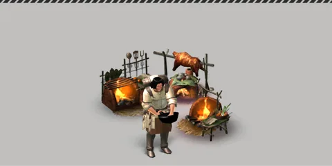
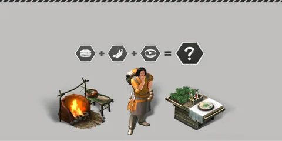

หน้าแรก › อาหาร
 การทำอาหาร ใช้ได้
การทำอาหาร ใช้ได้
ปรุงวัตถุดิบที่กองไฟหรือครัว — ล้างความดิบ เพิ่มความร้อน/เย็น รสชาติ และคุณสมบัติพิเศษตามสูตร
บางหัวข้อในหน้านี้ยังไม่เสร็จ
สูตรในหมวด ทำอาหาร ปรุงวัตถุดิบชิ้นเดิมให้ดีขึ้น — เนื้อที่ย่างแล้วยังเป็นเนื้อ แต่ไม่ ดิบ อีกต่อไป และได้คุณสมบัติใหม่ตามวิธีปรุง เช่น ร้อน ช่วยทนหนาว หรือ เพิ่มความอร่อย · อาหารจานใหม่ (ขนมปัง ชีส ไส้กรอก ฯลฯ) ทำผ่านการคราฟต์ปกติ ดู การคราฟต์

ทำอะไรได้บ้าง
- ย่าง อบ เคี่ยว นึ่ง ทอด ผัด ต้ม ชงชา ทำยาเม็ด ทำเครื่องดื่มเย็น — ทุกสูตรเอาคุณสมบัติ ดิบ ออก (กินแล้วไม่ปวดท้อง)
- ถนอมอาหาร (รมควัน ตากแห้ง ดอง บรรจุกระป๋อง) — อยู่ในหมวดเดียวกัน ดู การถนอมอาหาร
- ปลดสูตรใหม่ด้วยสกิลสาย ทำอาหาร (ดู สกิล)
วิธีทำ
- ไปที่อุปกรณ์ที่มี ไฟประกอบอาหาร (กองไฟ ครัว ฯลฯ) หรือ ราวตากผ้า / ห้องทดลองทางการแพทย์ ตามสูตร แล้วกด สร้าง
- เลือกสูตรในหมวด ทำอาหาร ใส่วัตถุดิบที่กินได้ลงช่องหลัก และถือเครื่องมือที่สูตรต้องใช้ (ไม้ จานหิน หม้อ กระทะ ตะแกรงเหล็ก ครก ภาชนะ เขียง)
- รอหลอดเวลาจบ ได้วัตถุดิบชิ้นเดิมที่ปรุงแล้วกลับมา
- ทุกครั้งที่ปรุง ใช้ โอกาสแปรรูป ของชิ้นนั้น 1 ครั้ง (ชิ้นละ 3 ครั้ง) — ดู การถนอมอาหาร
ระดับของที่ปรุง
ไฟประกอบอาหาร/เคาน์เตอร์ท็อปของแต่ละอุปกรณ์มี ระดับ — สูตรจะขึ้นเมื่อระดับถึงที่สูตรต้องการ · ระดับของอุปกรณ์ = เลเวลของสิ่งปลูกสร้างนั้น แต่ไม่เกินเพดานในตาราง
| อุปกรณ์ | ไฟประกอบอาหาร | อื่น ๆ |
|---|---|---|
| กองไฟ | 19 | — |
| กองไฟขนาดใหญ่ · กองไฟทำอาหาร · ตะแกรงปิ้งย่าง | 60 | — |
| ครัวเรือน | 59 | เคาน์เตอร์ท็อป 59 |
| ครัว · ครัวเกาะอารยธรรม · โต๊ะไม้ต้นขี้เถ้า | 60 | เคาน์เตอร์ท็อป 60 |
| ห้องครัวลาวา | 60 | เคาน์เตอร์ท็อป 60 · ห้องครัวลาวา 60 |
| ราวตากขนาดเล็ก (มี 2 แบบ) | — | ราวตากผ้า 39 หรือ 60 |
| ราวตากขนาดใหญ่ | — | ราวตากผ้า 60 |
| ห้องทดลองทางการแพทย์ | — | ห้องทดลองทางการแพทย์ 60 |
สูตรทำอาหาร (20 สูตร)
«ร้อน N» = คุณสมบัติ ร้อน ระดับ N → กินแล้วได้สถานะ อาหารร้อน · ระดับตามชั้นไฟที่สูตรใช้ (ไฟ 1 → 1 · ไฟ 15 → 2 · ไฟ 40+ → 3) · «ปลด» = เลเวลสาย ทำอาหาร ที่เรียนสกิลปลดสูตรได้
| สูตร | ต้องใช้ | เครื่องมือ | ผลที่ได้เพิ่ม | ปลด |
|---|---|---|---|---|
| ไม้เสียบ | ไฟ 1 | แท่ง | ร้อน 1 | 1 |
| เคี่ยว | ไฟ 1 | หม้อ | ร้อน 1 · ความนุ่ม 1 | 15 |
| ชาสมุนไพร | ไฟ 1 | ภาชนะ | ร้อน 1 | 20 |
| อาหารนึ่งพร้อมเครื่องปรุง | ไฟ 1 | มือเปล่า | ร้อน 1 | — |
| บาร์บีคิวจานหิน | ไฟ 15 | จานหิน | ร้อน 2 | 20 |
| ต้ม | ไฟ 15 | หม้อ | ร้อน 2 | 20 |
| บาร์บีคิวจานหินปรุงรส | ไฟ 15 | จานหิน | ร้อน 2 · เพิ่มความอร่อย 1 | 25 |
| นึ่ง | ไฟ 15 | หม้อ | ร้อน 2 | 25 |
| อบ | ไฟ 15 | แท่ง | ร้อน 2 | 35 |
| อบรสเผ็ด | ไฟ 40 | แท่ง | ร้อน 3 · เพิ่มความอร่อย 1 | 40 |
| ผัด | ไฟ 40 | กระทะ | ร้อน 3 · ผัด 1 | 40 |
| ทอดกรอบ | ไฟ 40 | กระทะ | ร้อน 3 · ทอดกรอบ 1 | 45 |
| ย่าง | ไฟ 40 | ตะแกรงเหล็ก | ร้อน 3 | 50 |
| ย่างแบบปรุงรส | ไฟ 40 | ตะแกรงเหล็ก | ร้อน 3 · เพิ่มความอร่อย 1 | 55 |
| เครื่องดื่มผสมน้ำแข็ง | เคาน์เตอร์ท็อป 40 | ภาชนะ | เย็น 3 | 50 |
| สเต็กสำหรับอาหารมือเย็น | ห้องครัวลาวา 50 | เขียง | ร้อน 3 · บัฟการโจมตี 1 · บัฟการป้องกัน 1 | — |
| ยาเม็ดปรุงเอง | ห้องทดลองทางการแพทย์ 40 | ครก | ยาฟื้นพลัง 1 | 40 |
| ยาเม็ดทั่วไป | ห้องทดลองทางการแพทย์ 40 | ครก | ยาฟื้นพลัง 2 | 55 |
| ยาคุณภาพดี | ห้องทดลองทางการแพทย์ 60 | ครก | ยาฟื้นพลัง 3 · เพิ่มความหวาน 1 | — |
(ไม้เสียบมี 2 สูตร — ของเดิมกับของซีซัน 2 — ผลเหมือนกัน) · อีก 8 สูตรในหมวดเดียวกันเป็นสูตรถนอมอาหาร ดู การถนอมอาหาร
คุณสมบัติแต่ละตัวทำอะไร
| คุณสมบัติ | ผล |
|---|---|
| ร้อน | กินแล้วได้ อาหารร้อน — ทนหนาวขึ้น (แต่ร้อนกว่าเดิมในที่ร้อน) ระดับสูงทนได้มากขึ้น |
| เย็น | กินแล้วได้ อาหารเย็น — ทนร้อนขึ้น (แต่หนาวกว่าเดิมในที่หนาว) |
| เพิ่มความอร่อย | รสอูมามิ +1 และพลังงาน +3 ต่อระดับ |
| ทอดกรอบ / ผัด | รสอูมามิและความมันเพิ่ม แต่ตัดบัพพลังงานสูงสุดของอาหารชิ้นนั้นทิ้ง |
| ยาฟื้นพลัง | สุขภาพที่ฟื้นจากอาหาร ×1.5 / ×1.8 / ×2.1 (ระดับ 1/2/3) |
| บัฟการโจมตี / บัฟการป้องกัน | พลังโจมตี +3.3 / พลังป้องกัน +2.3 ต่อระดับ ขณะมีบัพอาหาร |
| ความนุ่ม | ยังไม่มีผล (ข้อมูลเกมเขียนไว้เอง) |

เคล็ดลับ
ยังไม่เสร็จ
ช่องเครื่องเทศ ยังไม่เสร็จ
สูตรปรุงรส (…ปรุงรส / อบรสเผ็ด / ตากอาหารปรุงรสให้แห้ง ฯลฯ) ตอนนี้ให้ เพิ่มความอร่อย 1 คงที่ ไม่ว่าจะใส่เครื่องเทศอะไร — กำลังจะมา: รสตามเครื่องเทศที่ใส่
สีของอาหารที่ปรุง · เครื่องเคียง · ซุปล้างพิษ ยังไม่เสร็จ
- อาหารที่ปรุงแล้วสียังไม่เปลี่ยน (ต้นฉบับ เช่น ย่างแล้วคล้ำขึ้น)
- อาหารนึ่งพร้อมเครื่องปรุง ยังไม่ให้ผลตามเครื่องเคียงที่ใส่
- ต้ม กับวัตถุดิบยายังไม่ช่วยล้างพิษ